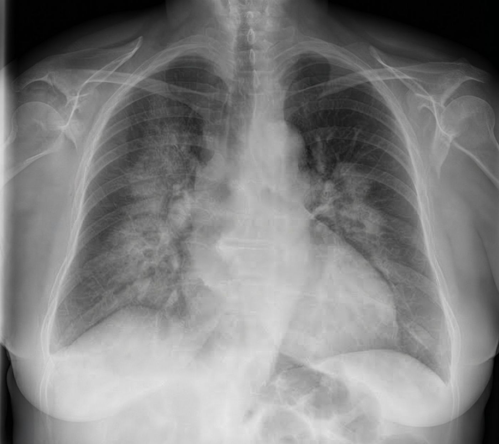
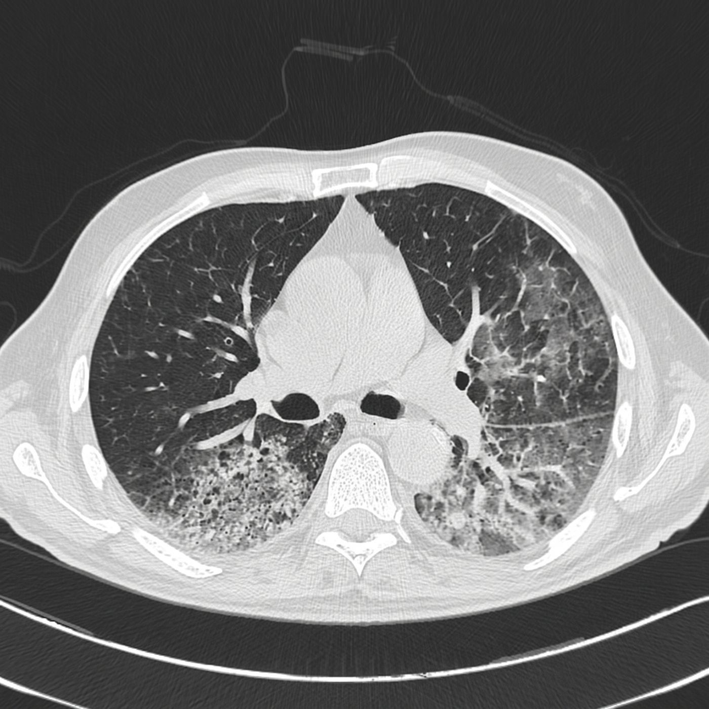
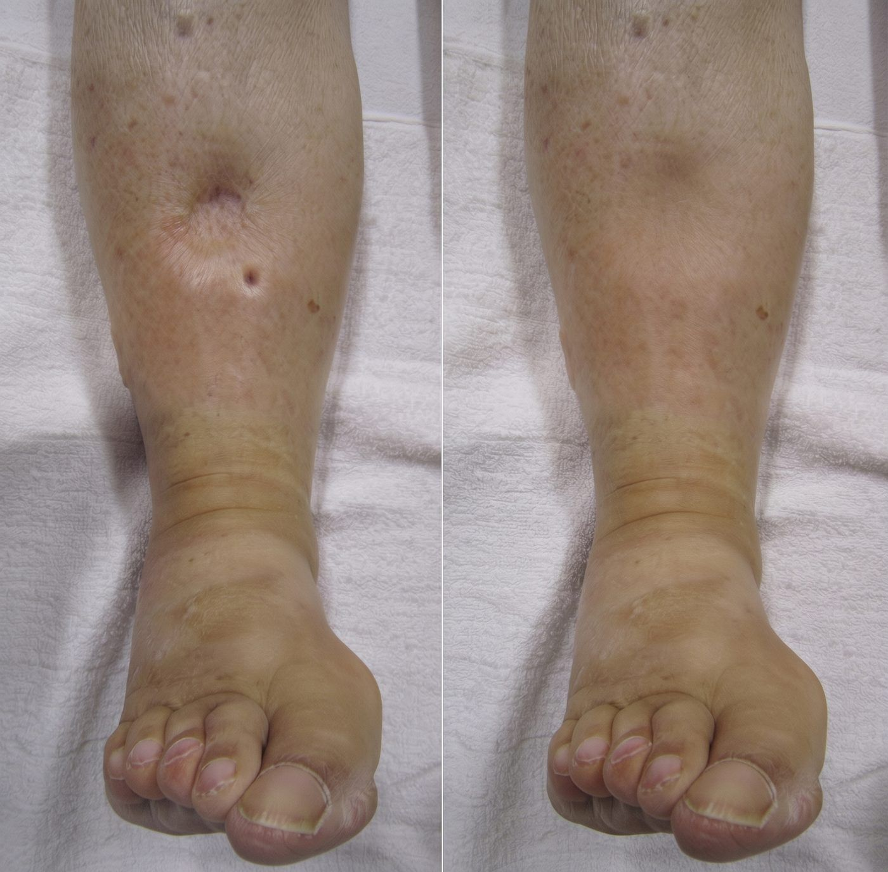
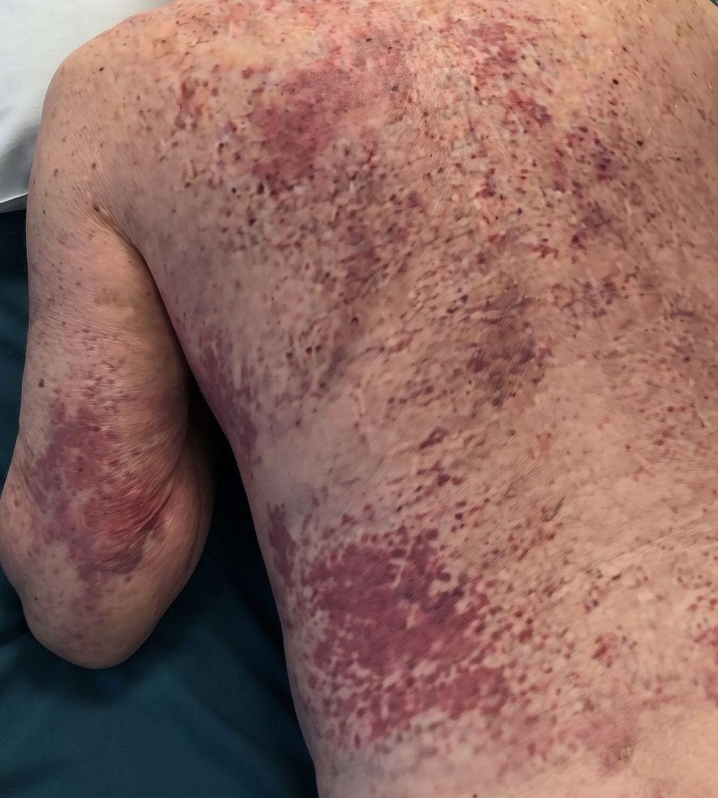
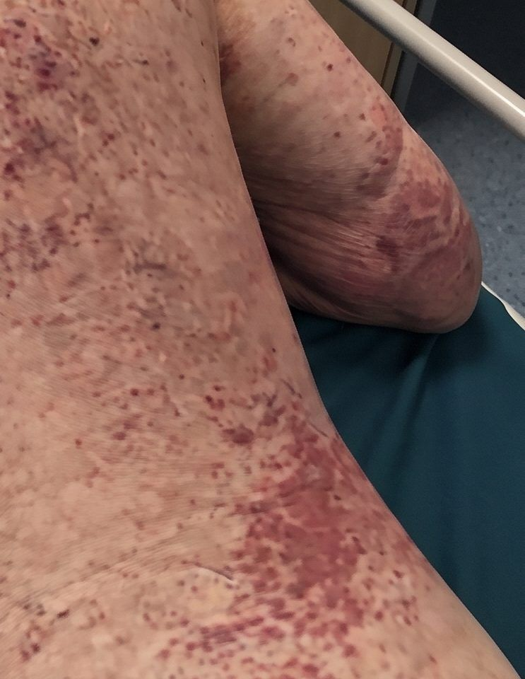
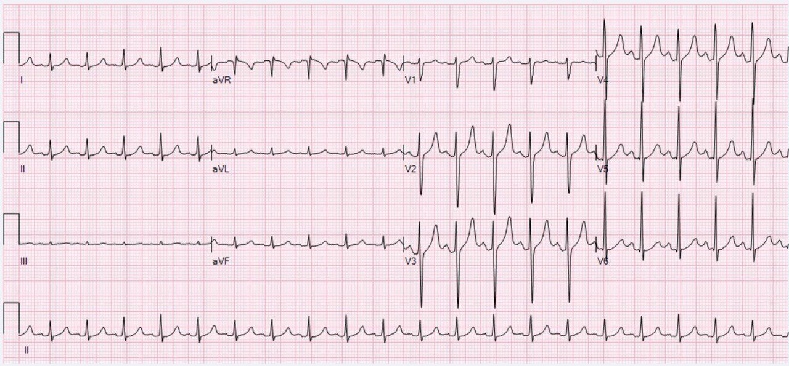

Pulmonary-renal syndrome: the debrief for week 5, He coughed up blood
02:40 · resus bay 3
He coughed up blood.
- Walter Brigg, 81, from Meadowcroft residential home. Vascular dementia: he answers every question cheerfully, and none of it helps.
- At half past one the night staff turned him and he coughed blood into a tissue: "bright red, maybe a teaspoon".
- Pulse 124, blood pressure 168/94, breathing 26 a minute, saturations 94% on 4 litres.
- A fortnight in bed or the chair. Both legs puffy. Amoxicillin since Tuesday for a crackly chest.
- Creatinine 212 µmol/L. In June it was 104.
- This page is about the pattern he had, pulmonary-renal syndrome: recognising it, its causes, proving it, and the first night. His cause was ANCA-associated vasculitis (ANCA: anti-neutrophil cytoplasmic antibody).
The decision: one problem, or two?
A bleeding lung and a failing kidney are one disease until proven otherwise.
- Pulmonary-renal syndrome is bleeding into the air sacs of the lung (diffuse alveolar haemorrhage) with a rapidly progressive glomerulonephritis: inflamed kidney filters, and kidney function lost over days or weeks.
- It is a pattern, not a diagnosis. Several diseases cause it.
- To a relative: "The smallest blood vessels in his lungs and kidneys are inflamed and leaking."
- The trap: each half has a comfortable explanation of its own. "Pneumonia" for the chest. "Dehydration" for the kidney.
The decision: why these two organs?
The same injury, in two beds of tiny vessels.
- Small-vessel vasculitis is inflammation that destroys the walls of the smallest vessels.
- In the lung, neutrophils destroy the wall between capillary and air sac. Red cells flood the air sacs.
- In the kidney, the filter is part-destroyed and inflammatory cells fill the space around it: a crescent. The urine then carries misshapen red cells and red-cell casts.
- In ANCA-associated vasculitis the antibody is aimed at proteins inside neutrophils.
- In anti-GBM disease the antibody attacks the basement membrane that air sac and filter both have. (GBM: glomerular basement membrane.)
The decision: which diseases do you test for?
Two diseases cause most of it.
- ANCA-associated vasculitis: most cases, roughly two thirds. Granulomatosis with polyangiitis (GPA) and microscopic polyangiitis (MPA). Almost no antibody is left in the vessel wall, so the biopsy is called pauci-immune.
- Anti-GBM disease: up to a fifth. Once called Goodpasture's syndrome. Rare: 0.5 to 1.8 cases per million a year.
- The rest: lupus, IgA vasculitis, cryoglobulinaemia, antiphospholipid syndrome, and drugs, cocaine, hydralazine and propylthiouracil among them.
- About a third of people with anti-GBM disease also carry ANCA. Test for both, every time.
- The proportions come from reviews that do not agree exactly. Read the bar as a sketch.
01:30 · "maybe a teaspoon"
Alveolar haemorrhage does not have to be coughed up.
- About a third of patients with alveolar haemorrhage cough up no blood at all.
- Think of it when three things arrive together: shadowing in both lungs, a falling haemoglobin, a failing kidney.
- Chest film: patchy shadowing on both sides, typically around the hila and lower down. Normal in up to a quarter.
- CT: ground-glass change and consolidation. Enlarged lymph nodes are uncommon; they suggest infection or cancer.
- Walter's haemoglobin: 118 in June, 91 on arrival, 73 by 08:40. His night CT report read "?infection ?oedema".
- The proof, when needed: bronchoscopy washings that come back bloodier each time.


The decision: a bag of fluid?
Before you treat a kidney as dry, check that the patient is.
Creatinine 212, and he is off his food. What do you do first?
- Assess his volume status. NICE's fluid guideline asks for exactly that, with the jugular venous pressure (JVP), oedema and a postural blood pressure.
- His: 168/94 lying, 164/92 sitting. JVP 3 cm. Tongue moist. Pitting oedema to mid-shin. The home's fluid chart: 1.4 to 1.6 litres a day.
- He was not dry, so no fluid went up. A kidney failing in a patient who is not dry needs another explanation. Dip the urine.
Reasoning from his examination, not a guideline rule.

The decision: what does a dipstick ask of you?
Dip it. Then have someone look at it.
- In the pot it looked like urine: "Amber, clear, no clots."
- The dipstick: blood 3+, protein 2+, nitrites negative.
- NICE: dip the urine as soon as acute kidney injury (AKI) is suspected. Blood and protein together, with no infection or catheter trauma to explain them: think acute nephritis and refer to nephrology.
- Microscopy: "Red cells >100 per high-power field, over 80% dysmorphic. Red-cell casts." That points to bleeding from the kidney's filters.
- At night, microscopy takes a phone call to the laboratory.
- In July Walter's dipstick showed blood 2+ and protein 1+. It went to urology.
The decision: how much of him have you seen?
The diagnosis was on his back.


- Purple spots and patches you can feel (palpable purpura) across his back, both flanks and his arms. His shins, where everyone looks, were swollen and clear.
- In a bed-bound patient the dependent skin is the back.
- NICE's own example of a multi-system disease reaching the kidney: signs of kidney injury plus a purpuric rash.
- Vasculitis rarely stops at two organs. Tap each pin.
Nose
Crusting in both nostrils. GPA favours the upper airway: sinusitis, mouth ulcers. BSR: ask about cocaine in anyone suspected of this disease.
Eyes
A patchy redness of the white of the eye that does not blanch (episcleritis). A supporting sign, not an organ-threatening one.
Wrists and ankle
Both wrists and the right ankle warm, swollen and tender. His knees were osteoarthritis. These were not.
Weight
63 kg. Two years ago, 74.
08:00 · the practice opens
Three months of one disease, filed under four headings.
Walter could give no history. His GP record could. Tap each card.
June · dehydration
Haemoglobin 128 to 118, creatinine 88 to 104, CRP 41. "likely dehydration. Encourage fluids. Repeat 6/52." Not repeated.
July · urology
Dipstick: blood 2+, protein 1+. A two-week-wait referral. No microscopy.
A fortnight ago · naproxen
"Bilateral knee pain, worse. Naproxen 500 mg bd."
Tuesday · amoxicillin
"Crackles both bases, T 37.6, SpO₂ 93%. Amoxicillin."
- Each entry was reasonable alone. Together they are a kidney, a urine, joints and a chest.
- The naproxen did not start this. It is a drug that injures kidneys, given to a kidney already under attack, so it stops tonight.
The decision: which story do you believe?
Four fair explanations, each for part of him.
Reasoning from Walter's case, not a published list.
| Explanation | What it explains | What it cannot |
|---|---|---|
| Pulmonary embolism | Blood coughed up, low oxygen, a fast pulse, a fortnight in bed or the chair, swollen legs | The kidney. A blood pressure of 168 |
| Pneumonia with a dry kidney | Crackles, CRP 96, a kidney injury in a man off his food | Oedema. Blood and protein in the urine. A falling haemoglobin |
| Heart failure | Wet lungs, swollen legs, a hypertensive heart | A JVP of 3 cm. A vigorous left ventricle on echo |
| Endocarditis | Nearly all of it | Closed only by testing: no murmur, no vegetation, no growth |
- Endocarditis is why the blood cultures go before the steroid.

The laboratory answers on the fourth ring
Three blood tests name the disease. One phone call brings them back.
- Send ANCA, anti-GBM antibodies, and ANA with complement (ANA, antinuclear antibody, screens for lupus).
- ANCA is reported by its target: PR3 in most GPA, MPO in most MPA.
- About 1 in 10 patients with the disease are ANCA negative. And ANCA turns up in infection and with some drugs. The antibody alone is not the diagnosis.
- Ring the laboratory. Walter's ran these once a day, at nine. Someone rang, so the result came to the bleep: PR3-ANCA 84 IU/mL, positive. Anti-GBM negative.
- A kidney biopsy is the gold standard. With a fitting picture and a positive ANCA, treatment does not wait for it.
09:00 · the laboratory rings back
Same syndrome, two diseases. One of them cannot wait for a biopsy.
Suppose the call had been: "Anti-GBM antibodies: positive." What changes today?
- Plasma exchange, urgently, without waiting for the biopsy (KDIGO). It removes the antibody; steroids and cyclophosphamide stop more being made.
- The kidney is far more likely to recover if treatment starts before dialysis is needed.
| Feature | ANCA-associated vasculitis | Anti-GBM disease |
|---|---|---|
| Antibody in the kidney biopsy | Almost none | A continuous line of IgG |
| Plasma exchange | Selected patients | Standard |
| Relapse | 30 to 50% in five years | Rare: under 3% |
Four in the morning · the night take
Six jobs before the day team arrive. None of them is the cure.
- No vasculitis guideline sets out a first night. This is NICE, the British Thoracic Society (BTS), the UK Kidney Association, and reasoning.
- 1. Stop the harm. Naproxen off.
- 2. Infection first. Blood cultures, then the steroid.
- 3. Oxygen to a written target of 94 to 98%, unless at risk of carbon dioxide retention (BTS). Tell critical care early: one review puts the need for a breathing tube at about half.
- 4. Potassium. From 6.0 mmol/L the guideline suggests insulin 10 units in 25 g glucose; nebulised salbutamol may be added. Intravenous calcium is for ECG changes. Bicarbonate is not routine.
- 5. Ring renal tonight. Check your local policy for the route. NICE's reasons to filter: potassium, acidosis, fluid overload, pulmonary oedema or uraemic complications that are not responding to treatment. Never one number. Walter was filtered at ten.
- 6. Blood and clots. Group and save; NICE suggests a transfusion threshold of 70 g/L. No heparin while he bleeds. No stockings on swollen, fragile legs: compression pumps, or reassess daily.
- Not tonight: anticoagulation, reflex fluid, the induction drugs.
The decision: a tablet, or a drip?
The steroid with a trial behind it is a tablet.
- BSR 2025: oral prednisolone 50 to 75 mg a day by weight, then the reduced-dose taper from the PEXIVAS trial, reaching 5 mg by four to five months. In PEXIVAS it did no worse, with fewer serious infections in the first year.
- Intravenous methylprednisolone pulses are not routinely recommended. BSR keeps them as an option in organ-threatening disease, naming active kidney disease and alveolar haemorrhage. Walter had both. BSR gives no dose: check your local policy.
- Induction is rituximab or cyclophosphamide, chosen by the renal or vasculitis team, never by the night registrar. Co-trimoxazole goes with either, against pneumocystis.
- Avacopan is no longer a UK option for new patients: the MHRA suspended it for them from 1 September 2026 and intends to revoke its licence on 1 March 2027.
The decision: who gets it?
Standard in one disease, selective in the other, and the guidelines part company at the lung.
- Anti-GBM disease: standard, and urgent.
- ANCA-associated vasculitis: selective. In PEXIVAS (704 patients), death or end-stage kidney disease came to 28.4% with plasma exchange and 31.0% without: no clear difference.
- For the kidney, BSR 2025, EULAR 2022 and KDIGO 2024 agree: consider it when creatinine is above 300 µmol/L, weighing the risks.
- For the lung, they differ. BSR and EULAR: not routinely for lung haemorrhage alone. KDIGO: it can be considered when alveolar bleeding comes with low oxygen.
- Both antibodies: KDIGO and EULAR add it.
- The renal team decide. Your part is the anti-GBM result, phoned through.
The decision: four things you will be asked to do
Each of these is right on another night.
Tap a card to turn it.
-
Not into a lung that may be bleeding. NICE does offer an anticoagulant while a scan is awaited. He is coughing blood and his haemoglobin is falling. This is judgement, not a clause: get the scan sooner.
-
Not with protein beside it and a failing kidney. That is a nephritis question: microscopy, and nephrology.
-
About 1 in 10 are negative. KDIGO sends them to biopsy.
-
Treatment does not wait for histology (KDIGO, EULAR). Starting before the ANCA is back is a judgement for you and the renal registrar.
Half past two · the renal unit
There is toast.
Back to Walter:
- The answer was under the sheet and in the urine pot hours before any antibody came back.
- Biopsy on day two: pauci-immune crescentic glomerulonephritis. Off dialysis by day fourteen. At three months, back at Meadowcroft, eating.
- That is the kind ending, not the usual one. In PEXIVAS about 3 in 10 patients this sick had died or reached kidney failure over about three years of follow-up.
- Why it happened to him, the case does not say.
Take home:
- Lung and kidney failing together: one disease until proven otherwise.
- Dip the urine. Blood with protein goes to the microscope and to nephrology.
- Turn the patient over.
- Send ANCA and anti-GBM, and ring the laboratory. A positive anti-GBM means plasma exchange today.
- Tonight: naproxen off, cultures, steroid, potassium, renal on the phone. No anticoagulant. No reflex fluid.
Where this comes from.
- Biddle K, et al. The 2025 British Society for Rheumatology management recommendations for ANCA-associated vasculitis. Rheumatology 2025;64:4470–4494. doi.org/10.1093/rheumatology/keaf240
- KDIGO 2024 clinical practice guideline for the management of ANCA-associated vasculitis. Kidney International 2024;105(3S):S71–S116. doi.org/10.1016/j.kint.2023.10.008
- Hellmich B, et al. EULAR recommendations for the management of ANCA-associated vasculitis: 2022 update. Annals of the Rheumatic Diseases 2024;83:30–47. doi.org/10.1136/ard-2022-223764
- Walsh M, et al. Plasma exchange and glucocorticoids in severe ANCA-associated vasculitis (PEXIVAS). New England Journal of Medicine 2020;382:622–631. doi.org/10.1056/NEJMoa1803537
- NICE NG148. Acute kidney injury: prevention, detection and management. Updated October 2024. nice.org.uk/guidance/ng148
- NICE CG174. Intravenous fluid therapy in adults in hospital. nice.org.uk/guidance/cg174
- NICE NG24. Blood transfusion. nice.org.uk/guidance/ng24
- NICE NG89. Venous thromboembolism in over 16s: reducing the risk of hospital-acquired deep vein thrombosis or pulmonary embolism. nice.org.uk/guidance/ng89
- NICE NG158. Venous thromboembolic diseases: diagnosis, management and thrombophilia testing. nice.org.uk/guidance/ng158
- NICE TA825. Avacopan for treating severe active granulomatosis with polyangiitis or microscopic polyangiitis (withdrawn). nice.org.uk/guidance/ta825
- O'Driscoll BR, et al. British Thoracic Society guideline for oxygen use in adults in healthcare and emergency settings (concise version). BMJ Open Respiratory Research 2017;4:e000170. doi.org/10.1136/bmjresp-2016-000170
- UK Kidney Association. Treatment of acute hyperkalaemia in adults, 2023: hyperkalaemia in hospital. guidelines.ukkidney.org/hyperkalaemia
- Boyle N, et al. Pulmonary renal syndrome: a clinical review. Breathe 2022;18:220208. doi.org/10.1183/20734735.0208-2022
- Reggiani F, et al. Goodpasture syndrome and anti-glomerular basement membrane disease. Clinical and Experimental Rheumatology 2023;41:964–974.
- MHRA. MHRA concludes review of Avacopan Vifor following reassessment of benefit-risk balance. Press release, 1 September 2026. gov.uk
- Vasculitis UK. Anti-GBM (Goodpasture's) disease. Updated July 2023. vasculitis.org.uk
Walter is fictional. Clinical photographs are used with consent for teaching.
Guidelines change. Checked October 2026.